“向内求”与“向外求”的书法篆刻采风调研行——中国国家画院“长江主题美术创作项目”考察团走进湖北恩施
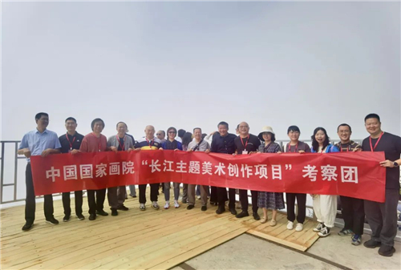
考察团一行在三里城哨棚顶
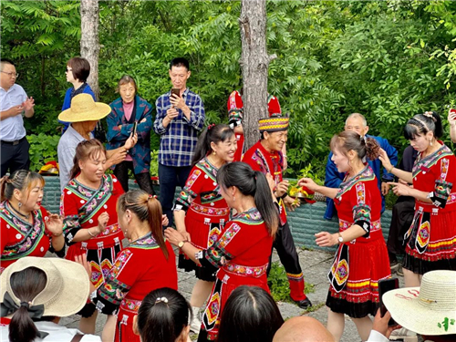
非遗保护展演
6月12日至17日，由中国国家画院副院长徐涟、中国书画院理事、河北省文化名人书画院会员田清江、中国国家画院书法篆刻所所长魏广君带队的中国国家画院“长江主题美术创作项目”考察团在湖北恩施土家族苗族自治州（以下简称“恩施州”）沿长江流域开展采风调研活动。中国国家画院书法篆刻所副所长洪厚甜、谢小铨及艺术家魏杰、蔡大礼、王东声、赵际芳、梅跃辉、唐朝轶等组成。考察团一行足迹走过恩施州的巴东县、建始县、鹤峰县，既感受到长江、清江的碧波荡漾，走进山川峡谷腹地，领略大自然的磅礴瑰丽，更深入到田间村头、大山深处，感受土家族、苗族、布依族等民族的人文风俗和廪君文化的非遗传统，并在深山院落内开了一个特别的党会；走进博物馆采风访碑，获取诸多启迪。而此行，考察团从出发就带着一个命题，即：书法篆刻应该如何写生？
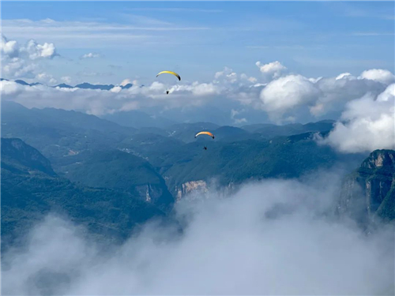
巴东水布垭镇三里城哨棚顶
6月12日，考察团到达湖北省恩施州巴东县水布垭镇。这里因风景如画，又有“诗画水布垭”的美誉。长江支流清江贯穿整个水布垭镇，史料记载，巴人先祖廪君活跃于包括水布垭镇在内的清江流域，留下了独特的巴文化。此行正值“巴东县廪君文化研究座谈会”在水布垭镇举行，滑翔伞飞行表演、首届农副产品评选、非遗展演等一系列相关活动也给考察团留下了深刻的印象。
清江风光
6月13日，考察团一行沿着蜿蜒的盘山公路向三里城哨棚顶进发。雨过天晴，三里城云海翻腾，壮丽如画。三里城位于水布垭镇清江北岸，三面环水，绝壁千仞，独立峻绝。据专家学者研究考证，水布垭三里城史称武落钟离山，又名难留城山，是巴人始祖廪君的故里，巴文化的发祥地，是现代土家人心中的圣地神山。4000年前，廪君巴人从武落钟离山走出，沿着清江一路向东，筚路蓝缕，创造了辉煌灿烂的民族文化。
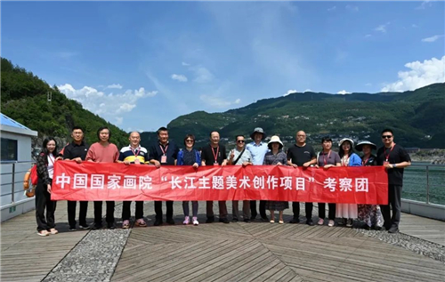
考察团一行行船在清江
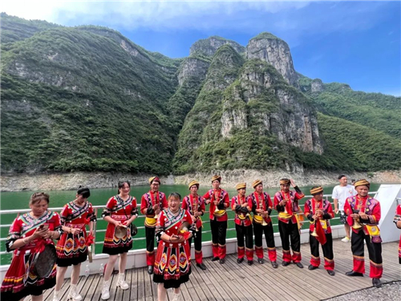
清江上的人文风情
随后，一行人乘船行于清江上，清江大桥飞架南北似彩带，一江碧水如诗如画。在船上，考察团一行惊讶于武落钟离山云雾飘渺、五兄弟峰层峦叠嶂、十字江鬼斧神工，一路前行奇山秀水、目不暇接，也让魏广君产生了“雄秀绮丽的景色让人心中产生一种欲抚还休的颤动，几欲施诸笔墨与之触碰一番”的强烈冲动。同时，清澈的碧水也让考察团印象深刻，在与当地人交流中得知，在“河湖长＋检察长”协作机制高效运行下，巴东境内长江和清江水质连续几年保持Ⅱ类水质。之后，考察南潭村香浓寨，远眺这一方青山碧水，并在晚上参加了巴东县庆祝恩施州建州40周年暨2023年“文化和自然遗产日”展演活动。这是一台“接地气”演出，演员大部分是普通的百姓，他们以自己的艺术表达展现土家族、布依族的生活方式，讲述廪君的故事。考察团一行也在不知不觉中融入了当地文化中。
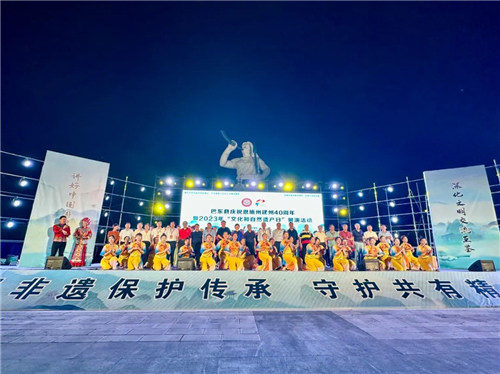
巴东县庆祝恩施州建州40周年暨2023年“文化和自然遗产日”展演现场
巴东，这片被称为“三峡秘境”的净土，以自己的方式滋养着每一位来此处寻访的艺术家。长江沿岸的秀美风光，巴东的风土人情，陶冶了心性，更重要的是感受到土家族始祖廪君不畏艰险、勇往直前的奋斗精神和当代土家人的坚韧不拔。
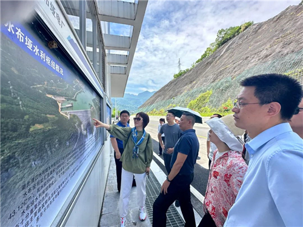
图片考察团一行参观水布垭水利枢纽
6月14日，考察团一行参观了巴王水寨、水布垭水利枢纽以及绝壁天河，这其中，“绝壁天河”一次徒步穿越，让考察团的每一位成员都为之动容。1967年，为了解决巴东、长阳两县人畜饮水和农田灌溉难题，勤劳勇敢的巴东人民硬是在没有机械辅助的条件下用汗水、鲜血甚至生命历时11年在峭壁上人工凿出来了27公里的“绝壁天河”，堪称巴东的“红旗渠”。“山羊无处走，乌鸦无处落，上看帽子掉，俯首心直跳”是当地人对当时开凿“绝壁天河”的描述。考察团一行徒步走在水道旁的窄路上，一边是高耸险绝的崖壁，一边是深不见底的悬崖，沟渠内清澈的流水在静静流淌，诉说着那些可歌可泣的英雄事迹。这种人类的极限挑战也刺激着每一位艺术家，尽管太阳酷热，但考察团一行反而越走越有力量了。徐涟、魏广君等同志边走边了解当年开凿的故事。徐涟看着远处群山中一层一层的屋舍感慨道：“人类的生存能力真的很强大，不同的地理环境造就了不同的生活方式，即便是在如此艰苦的条件下，依然迸发出无穷的创造力和蓬勃的生命力。”而王东声化身“暴走哥”走在队伍前列勇往直前，一直在返程的呼喊下才依依不舍往回走，他们似乎也在挑战着自身的极限。
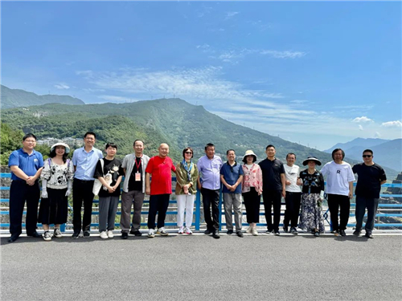
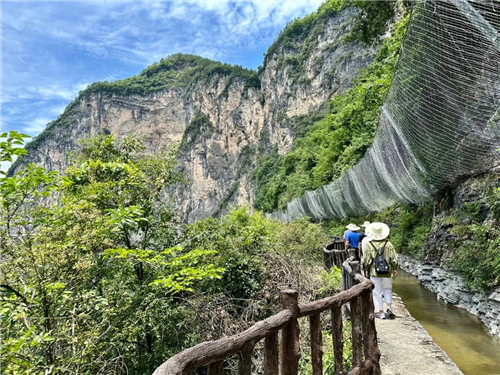
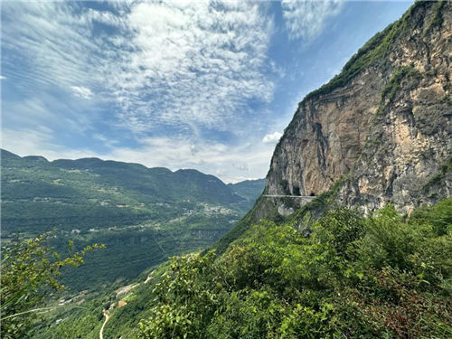
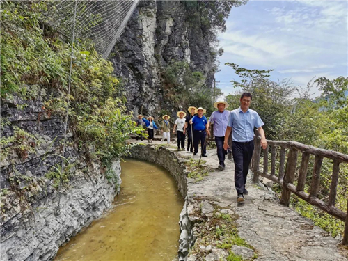
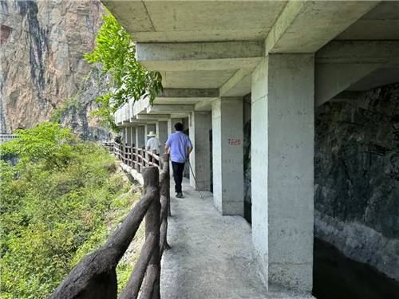
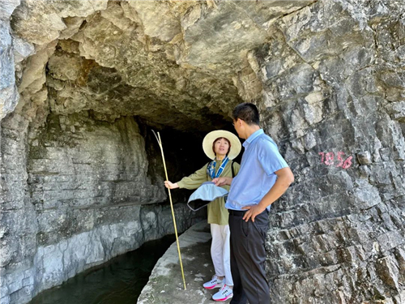
考察团一行徒步“绝壁天河”
考察团从出发就带着一个命题，即：书法篆刻应该如何写生？在徐涟看来应是两个方面：一个是向外求，一个是向内求。“向外求是说我们从画室、书斋走到长江边、走到深山最基层的生活里，这种经历对我们来说很难得。这次我们又与当地的‘土家禀君文化研讨会’同期，而长江流域几千年来无数文化积累沉淀为今天的面貌，这些文化都可以与我们的书法创作紧密相连。同时，我们看到的不仅是令人惊奇的自然风貌，还有这里的人民在艰苦的条件下所创造出来的不同的生活方式和迸发出的蓬勃生命力，都会成为滋养艺术的源泉。向内求其实是对自我的一种锤炼和要求。我们所吸收的这些养分需要‘自我’这个容器来盛载和转化，培养品格、锻炼意志、开阔心胸，都需要生活的深度体验当中才能有所收获。书法篆刻艺术家的写生创作不是简单地临摹碑帖，而是自我的修炼。在这次采风调研的过程中也能充分感受到艺术家们对自我的挑战，这也是一种非常好的体验。”
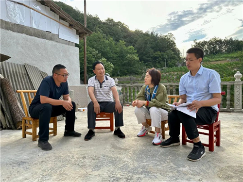
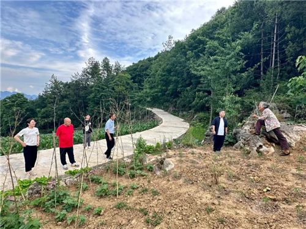
考察团一行参观深入农家地头考察调研
魏广君认为，艺术家应先在自然中壮怀自己的心胸，然后皆可循之于道；在洪厚甜看来，书法家的采风调研更需要“摄魂”；看到了众多支流汇聚成长江的雄伟壮阔，让梅跃辉感叹到“正所谓‘不积小流，无以成江海’，对于书法创作研究而言又何尝不是如此？”
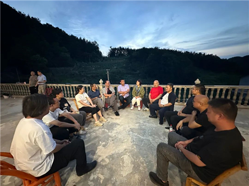
考察团一行在一家农家小院内召开了党组织生活会
在之后的几天里，考察团还在雨中探秘地心谷绝境，参观了恩施土家族苗族自治州博物馆，展出的东汉时期的《（东汉）元和四年刻石》，让大家喜出望外，如获至宝。据悉，该刻石是目前为止三峡地区考古发现年代最早的刻石，极具历史价值与艺术价值，此次采风访碑的过程也令大家印象深刻。
考察团一行在雨中探秘地心谷绝境
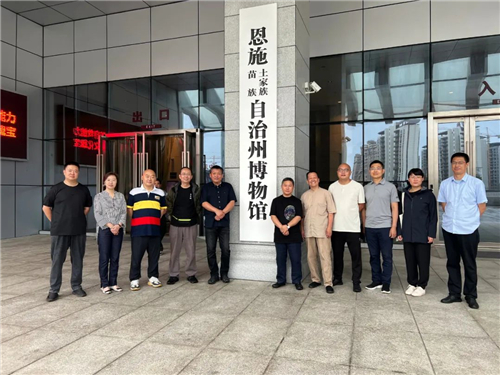
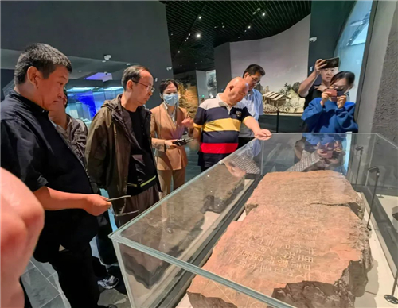
考察团一行在参观苗族、土家族自治州博物馆
一路上，大家也在不断与当地人走访互动，这些真实的生活状态也会在日后的创作中不断滋养着大家。正如魏广君所说：“感怀之外，诗情落于书法写生采风的理路中，无论是莫名的高歌和沉吟的低唱，还是感情达物的悲悯和激昂的愤郁，皆可循之于道吧。”
众家谈
魏广君：1990年，随黄思源先生在重庆开美术选题和图书订货会，我们走访了川美和西南大学的几位教授。适徐无闻先生不在渝，有点遗憾。后蒙毛峰先生接待及指点，我自重庆乘船游三峡，一缘及今常常感念。大概是三天两夜到了宜昌，可惜沿途景色今大多不记得了，倒是闷热的舱室中，与北京王勇兄及四位日本游客下象棋的印象稍存若许。
2023年6月12日，中国国家画院书法篆刻所13位同仁到达恩施巴东县水布垭镇。次日，一行乘船行于清江上，雄秀绮丽的景色让人心中产生一种欲抚还休的颤动，几欲施诸笔墨与之触碰一番，这种强烈的讶异感随着江畔景物的迅速变换而转移，无奈之余且将这方沉静的江水风物置于心下，留念于远方。后至土家族发源地的三里城，山崖上一簇簇的白云看到了我们，陡然奔腾而来。大开的云阵抱拥着大家和草木岩石，在云崖之巅游来荡去。于是在一种天人合一的惊心动魄中、在一种感惠徇知欢娱的况味中，渐渐体味到致中和的境界。“地心谷”曼妙的云，不断明灭变幻着远山近水：翠绿如滴，云覆之则苍。举望眼寻隙云外，只见藏青藏蓝的天穹，干干净净。我亦愿望心思能安于圆融的云海，干干净净。感怀之外，诗情落于书法写生采风的理路中，无论是莫名的高歌和沉吟的低唱，还是感情达物的悲悯和激昂的愤郁，皆可循之于道吧。
洪厚甜：此次采风写生是响应中国国家画院“长江主题美术创作项目”的号召，书法篆刻所一行来到位于长江中上游的巴东地区。这次我们来也正值“巴东县廪君文化研究座谈会”期间，我们看到了当地人民对文化的热爱，他们把非遗文化作为一个主题做出了自己的理解，奉献出自己的时间去创作、排练。虽然可能经验不足或水平不是那么高，但这也足够引起我们的思考。艺术走到人民群众中去不是降低艺术标准去做一种迎合，文化的建设不是要消解它的经典意义，而是要让大家的生活中充满了经典，重新塑造经典文化在中华民族的新征程中的一座丰碑，滋润大众的心灵。
这次我们走出来直接住到当地人家里面，这种经验很可贵也很感人。我们所到的山区相对来说比较闭塞，但这里有那么多人走出大山又用所学反哺自己的家乡土地，这是一种很淳朴、也很崇高的人文精神，而这也是我们中华民族的一种精神。书法家的难难在笔墨要有生活、要有灵魂、还要有引领，要于无声处听惊雷。这也是我每次采风对自己的要求。
谢小铨：书画同源，书法需要写生吗？《新唐书》载“旭自言，始见公主担夫争道，又闻鼓吹，而得笔法意”。杜甫《观公孙大娘弟子舞剑器行·序》也曾说“昔者，吴人张旭，善草书帖，数常于邺县见公孙大娘舞西河剑器，自此草书长进，豪荡感激，即公孙可知矣”。韩愈在《送高闲上人序》里说张旭“观于物，见山水、崖谷、鸟兽、虫鱼、草木之花实、日月、列星、风雨、水火、雷霆、霹雳、歌舞、战斗，天地事物之变，可喜可愕，一寓于书”。李阳冰也有过类似描述：“于天地山川，得方圆流峙之常；于日月星辰，得经纬昭回之度；于云霞草木，得霏布滋蔓之容；于衣冠文物，得揖让周旋之体；于须眉口鼻，得喜怒舒惨之分；于虫草禽兽，得屈伸飞动之理……”。他认为万物情状都可入书的。怀素自称“贫道观夏云多奇峰，辄常师之。夏云因风变化乃无常势，又遇壁坼之路，一一自然”。中国书史，法帖之外，碑刻摩崖名迹遗存众多，清乾嘉之际，碑学骤兴，访碑之风盛行，书风一改颓势。所以，对山川风物的观察，对刻石摩崖的参访，是书法学习及创新的必由之路，深入生活，扎根人民，是一切艺术创作的源泉，绘画如此，书法亦是如此。书法篆刻所艺术家们深入长江流域腹地湖北恩施，在壮美河山中体验新时代发展之磅礴气象，在长江流域众多文化遗迹中感受中华文化多元一体、生生不息的精力量，深深体会到习近平总书记对长江文化的高度重视的远见卓识。长江造就了从巴山蜀水到江南水乡的千年文脉，是中华民族的代表性符号和中华文明的标志性象征。长江是中华民族的母亲河之一，也必须是我们艺术家倾情讴歌的对象。
魏杰：
长江
隆隆惊雷鸣
饮血茹毛唤醒
五千年一瞬飞鸿
启蒙
滔滔奔向东
孕育万千英雄
再唱一曲中国梦
静听
滚滚狮吼声
震响无尽天穹
必染更美中国虹
如龙
蔡大礼：此次随中国国家画院书法篆刻所同仁到湖北恩施采风，行程五天，收获颇丰。感觉最触动自己的东西有几点：一是历史与人文，恩施是土家族苗族聚居的地区，有自身独特的历史文化传统，此行正巧与当地举办的“巴东县廪君文化研究座谈会”同期，通过参与活动和阅读相关资料，对中南地区少数民族文化有了更多的了解和认识，对中华民族的融合发展历史进程有了更加丰富直观的感受。二是深入当地生活，饱览山川美景，在水布亚三里城的日子，给我留下了美好深刻的印象。三是采风访碑，在恩施博物馆得见《（东汉）元和四年刻石》，有“元和四年”纪年，全是早期汉隶形象，无波磔，字形古拙，态度潇洒，章法自然错落，且存字过百，实可称汉隶精品，特别值得关注与学习。
王东声：不能身临其境，便不会有此时此刻的现场感，不会有切身的体验与感知。
巴东几日，雨雾阴晴，晨晖落照，一个都不能少。碧翠的景致，清透的呼吸，质朴的风土人情，体会尤深。云雾升腾的哨棚顶，清洁碧透的清江水，难以置信的地心瀑布，落差极大的水布垭大坝，鬼斧神工的天然城墙，山顶俯瞰的十字江，以及曲曲弯弯山路深处的向府大屋，一切一切，都那么令人难忘。
巴东位于长江流域，有“三峡秘境”之称。真是名不虚传。几天来，更多的是在游走和感受——中国画观景写画所谓“目视心记”，恰恰符合我的个人写生观和图绘概念。空闲不多，只是回到住处涂抹，得小画7件，尺幅不大，却是很好的体验和纪念。
赵际芳：6月12日傍晚，我随中国国家画院书法篆刻所一行十余人到达湖北恩施州巴东县水布垭镇，开始了“长江主题美术创作项目”的考察。不走出去，永远不知道真实的世界和想象之中的差距，也永远无法理解古人的“读万卷书，行万里路”的真谛。工作这么多年，竟然第一次到湖北出差。本来以为夏日的湖北是闷热难耐的，结果六天的考察竟然大多是在凉风习习中度过的；本来以为恩施只有自然风光，没想到在恩施州博物馆里竟然看到了东汉早期的《（东汉）元和四年刻石》，一时间令大家兴奋不已。该刻石考古出土于2003年，但由于缺少好版本的拓片与高清原石照片，加上当地博物馆并没有太多重视，导致了此刻石鲜有人知晓，甚至博物馆中对此刻石的标签竟然是《东汉税氏墓志铭》。该刻石记载的是东汉元和四年（公元87年）秭归的税少卿、税少阳买地造冢之事。其书法风格与《莱子侯刻石》（公元15年）、《何君阁道刻石》（公元57年）、《鄐君开通褒斜道摩崖》（公元63年）、《大吉山买地记》（公元76年）、《任城王墓黄肠石题刻》（公元101年以前）等早期汉代隶书风格比较接近，无波磔笔画，字形开张，率意自然。
《（东汉）元和四年刻石》出土于湖北巴东，位于汉江中下游，汉江是长江最大的支流，该刻石是目前为止三峡地区考古发现年代最早的刻石，极具历史简直与艺术价值，应该受到广大研究者的重视。通过此次考察，除了“仰观宇宙之大，俯察品类之盛”，还现场目睹了一块东汉早期隶书刻石，幸甚至哉！
梅跃辉：长江孕育了丰厚的长江流域文化，其宏伟雄阔并非一己之能，而是汇聚众多支流形成的，正所谓“不积小流，无以成江海”，对于书法创作研究而言又何尝不是如此？清江是组成长江的重要支流，自西向东横贯恩施州八百余里，巴东段是清江最美、最入画的河段之一，峡江两岸层峦耸翠、奇峰嵯峨，船行江中，大有“万峰磅礴一江通，锁钥荆襄气势雄”的诗境。这次考察不仅领略了长江沿岸的秀美风光，陶冶了心性，体验了巴东的风土人情，更重要的是还体味了土家族始祖廪君不畏艰险、勇往直前的奋斗精神和当代土家人的坚韧不拔。三里城险绝的崖壁人爬上去都异常困难，但勤劳勇敢的巴东人民硬是在没有机械辅助的条件下用汗水、鲜血甚至生命在峭壁上人工凿出来了30公里的绝壁天河，堪称巴东的“红旗渠”，这种敢想、敢干、奋勇拼搏的进取精神激励着我和同行者，我要把这种精神融入到以后的学习、工作和创作中去，创作更多反映艰苦奋斗、勇往直前的作品。
书法纵然不能像绘画那样直接面对自然写生，但对于自然的观察和体味一直是推动书法发展的重要源动力。张怀瓘论书就以“自然”为本，认为草书要“同自然之功，物类其形，得造化之理”。古人对于书法技法的理解也大都源于对自然的体悟，张旭看公主与担夫争道而悟笔法，观公孙大娘剑器舞而得其神；怀素“观夏云多奇峰，辄常效之”；黄庭坚也从船夫荡桨悟用笔。师法自然、妙造自然自古就是人们体悟书法技法的重要方式，以此体察自然物象与书法之间的关系，追寻书法的生动意象。对书法的欣赏也注重创作状态与自然的相通，对于书法的评述也以丰富的自然物象相类比，如释亚栖自评“若飞鸟出林，惊草入蛇”；杨泉评草书“乍杨柳而奋发，似龙凤之腾仪。应神灵之变化，像日月之盈亏”；《书仪》也说草书“或烟收雾合，或电击星流，以风骨为体，以变化为用。”相关书法与自然之间关系的论述不胜枚举，足见体悟自然对书法学习和创作的重要。
书斋和自然是两种完全不同书写的环境，山川的雄阔、崖壁的险绝才能孕育出与之相应的摩崖石刻，摩崖石刻的古拙朴厚、奇逸险峻是沉浸在书斋所不能书就的，长期浸淫于书斋的闲情逸致，往往会限制书家的想象力和创造力，因此，书法也需要经常走出去体验自然、感悟美好、开阔胸襟。
《（东汉）元和四年刻石》是本次考察的意外发现，让大家喜出望外，如获至宝。虽为东汉石刻，但与东汉隶书完全不同，从风格上来看更接近于早期隶书状态，点画泯除了东汉隶书的蚕头燕尾，全以篆书用笔行之，诚如钱泳所述“汉人以篆法作隶”。通篇采用满密的章法，结体造型不像汉碑那样以字为单位，而是把单字的结体作为章法的局部来造型，依据每字字形的特点采用穿插避让、错落收放等手法组合在一起，形成丰茂的整体，这种布局既增强了作品的整体性，又充分发挥了每字的造型潜能，给我的创作带来诸多启发。能一睹此刻的风采便不需此行，更何况不止于此。
唐朝轶：此次恩施采风之行，感触颇深，受益良多。以前采风去过很多地方，唯独荊楚之地去之甚少，恩施州位于湖北的西南，与湘、渝接壤，境内风光秀美、气候宜人，生态自然环境极佳。此行主要考察了位于长江支流清江中游的水布亚镇沿线山川风物，体验了土家族祖先廪君文化的独特魅力；同时在恩施土家族苗族自治州博物馆参观遗存的商周青铜器皿以及《（东汉）元和四年刻石》等，领略了商周秦汉时期长江流域中上游一带的灿烂文明。
作为一位四川人，一直有个愿望，像李白、东坡一样乘船一路行吟出夔门。此行沿清江溯流而上，沿岸山势奇伟，重岩叠嶂，风光旖丽，亦算是了吾夙愿。四川古称巴蜀，巴东之地正是巴文化之发源处，巴楚、巴蜀文化交汇，此行亦是对长江流域文明的溯源，于我意义重大。
张璪云：外师造化，中得心源。艺术创作既要师法自然，到自然中去写生，“搜尽奇峰打草稿”，用画笔记录下各地的山川景致，更要提升艺术家内在的修养，所谓＂读万卷书，行万里路＂。书法家的写生则更多是得心源的过程。书法是一门抽象的艺术，承载了中华几千年的文明，乃中国写意精神的最佳体现，可以说是写意之尤。黄宾虹先生经常外出写生，他每到一处，只是简单的用线条勾勒出眼前山川地貌之大势，就如书写汉字一样，把其中疏密收放、阴阳向背的内在关系表现出来即可。他的写生实际就是一种将外在自然形象转化成内心审美体验的过程，所以书法家的写生更多是从山川自然中去体悟笔法与章法，如怀素观夏云多奇峰悟得草书的章法，黄庭坚观船夫荡浆悟得笔法，还有书法用笔讲求的“印印泥”“屋漏痕”等无不是从自然生活体察中所得。
编辑：彭越